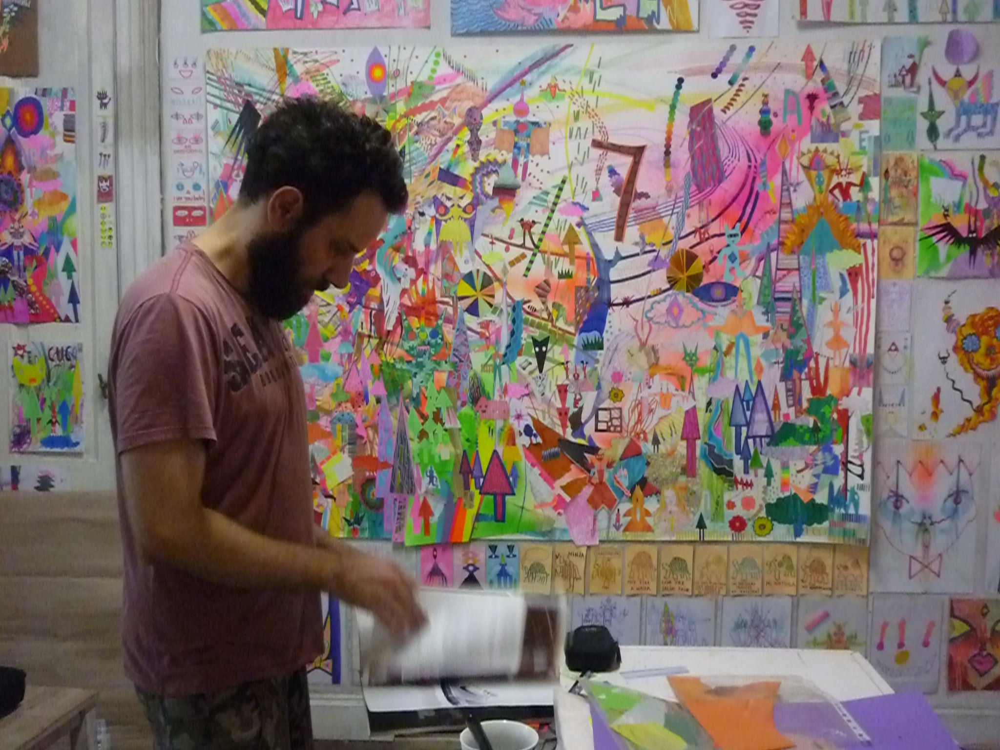
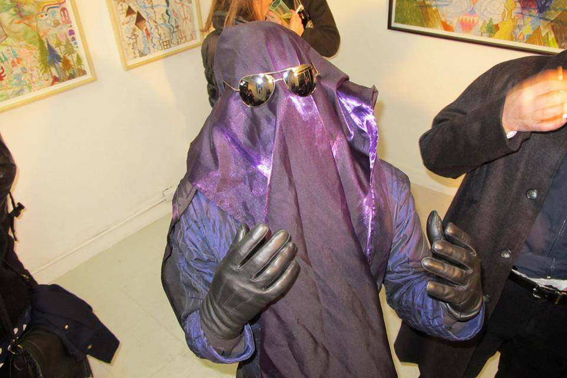

Diego de Aduriz
Diego De Aduriz nació en la ciudad de Buenos Aires en 1977. Estudió Bellas Artes y Arquitectura. Trabaja en soportes múltiples: dibujo, pintura, collage, instalaciones, performance, diseño de indumentaria, edición de fanzines, escritura y redes sociales. En 2022 festejó sus 20 años en el arte con una gran retrospectiva en el Museo de Arte Contemporáneo de Buenos Aires (MACBA).
Publicó dos libros: el poemario "Hoy recordé algo que había olvidado" (Iván Rosado, 2017) y el diario "Un beso en la casa de los sueños" (Triana, 2021). Participó del Salón Nacional de Artes Visuales, el Premio de Pintura del Banco Central, el Premio Klemm y residencias como la Beca Kuitca y el Laboratorio de Acción, en el C. C. San Martín.
Realizó muestras, performances y desfiles en galerías, museos y ferias de la Argentina, incluyendo el Museo de Arte Moderno de Buenos Aires (MAMBA); Museo de Arte Latinoamericano de Buenos Aires (MALBA); Palais de Glace; Arteba; BafWeek y museos de arte contemporáneo de Mendoza y de Salta.
También en el exterior: en Londres (Frieze Art Fair); Nueva York (Consulado Argentino; Hogar Collection Gallery); Madrid (Semana Internacional de la Moda) y Brasilia (C. C. Renato Russo).


